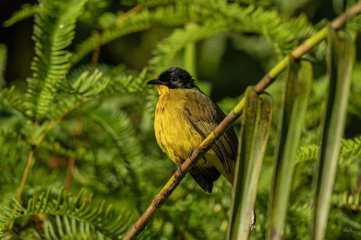
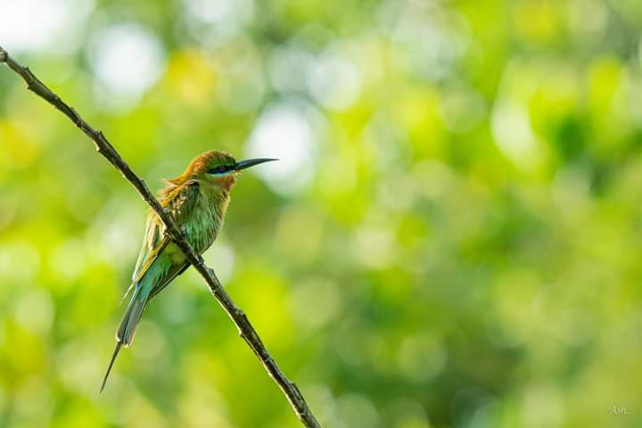
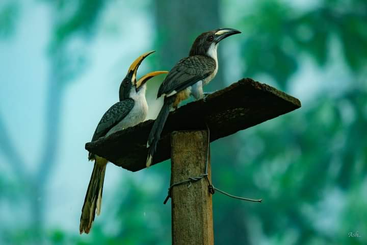
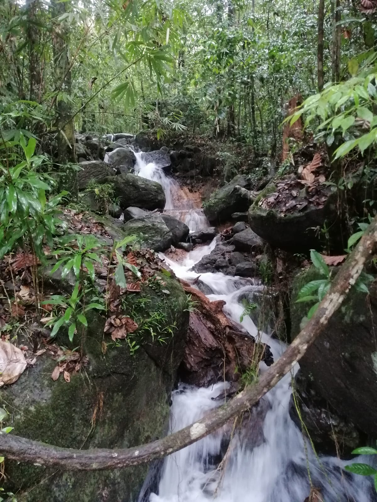
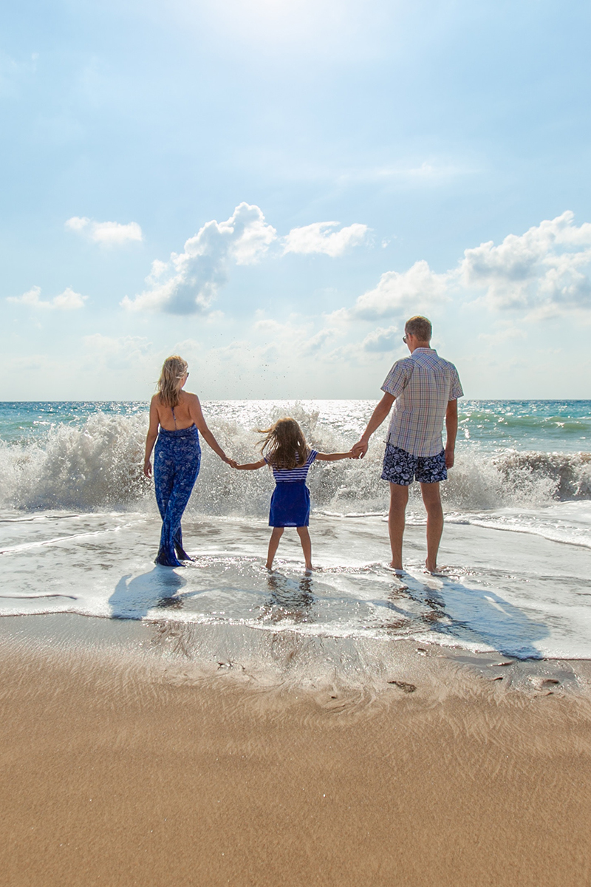

Explore & Experience



Our hotel is perfectly situated on the border of the renowned Sinharaja Forest Reserve, offering an exceptional opportunity for ornithologists and birdwatching enthusiasts alike. from the comfort of our property, you can frequently spot a variety of vibrant bird species that inhabit the surrounding area.
For those eager to explore further, our extensive network of forest trails leads you through diverse bird habitats and microclimates within the rainforest. Along the way, you may encounter fascinating species such as the Black-capped Bulbul, Emerald Dove, Black-headed Oriole, Grey Hornbill, Hill Myna, Legge’s Hawk Eagle, Asian Paradise Flycatcher, and many more each thriving in this unspoiled natural sanctuary.
Located on the edge of one of Sri Lanka’s most treasured natural wonders, our hotel offers exclusive access to the Sinharaja Forest Reserve an internationally recognized biodiversity hotspot and a sanctuary for rare and endemic species.
Sinharaja is one of the last remaining virgin tropical rainforests in Sri Lanka and is home to more than 50% of the country’s endemic flora and fauna. Owing to its ecological significance and high biodiversity, it has been declared both a UNESCO National Heritage Wilderness Area and a Man and Biosphere Reserve (MAB) since 1978. Spanning approximately 11,187 hectares, the forest stretches 21 km in length and 3.7 km in width, forming a lush, green corridor of biologically rich, lowland tropical rainforest.
To help you fully experience this pristine ecosystem, our hotel will coordinate all necessary arrangements with the Forest Department for guided excursions, treks, and nature walks into the heart of Sinharaja. We take care of entry permits, experienced guides, and even provide freshly prepared meals or packed lunches, ensuring your journey into the forest is comfortable, safe, and truly unforgettable.

Step off the beaten path and into the heart of rural Sri Lanka with our guided Village Walk, a peaceful and enriching experience that offers a glimpse into traditional village life.
Wander along scenic footpaths through lush paddy fields, winding trails, and quiet hamlets, where time seems to move a little slower. Along the way, you’ll witness age-old farming practices, explore rustic village homes, and experience the enduring charm of a lifestyle that has remained largely unchanged for generations.
This immersive journey invites guests to interact with local villagers, observe their daily routines, and learn about the cultural traditions passed down through centuries. You’ll be welcomed with the warm hospitality Sri Lanka is known for, making it a truly personal and memorable encounter.
Whether you're seeking cultural insight, a connection with nature, or simply a chance to slow down and appreciate the beauty of simplicity, the Village Walk offers a meaningful window into the soul of the Sri Lankan countryside.
Step into the rich legacy of Sri Lanka’s world-famous tea industry with a guided tour of the Ceciliyan Tea Factory. Surrounded by rolling hills and lush green plantations, this iconic estate is recognized for producing some of the finest Ceylon Tea.
During your visit, you'll follow the captivating journey of tea, starting from the gentle hand-plucking of young tea leaves in the nearby estates to the traditional, time-honored methods of withering, rolling, fermenting, drying, and grading. Each step reveals the care and craftsmanship that goes into creating the perfect cup.
This immersive experience offers a behind-the-scenes look at one of Sri Lanka’s most treasured exports, giving you a deeper appreciation for the art and science behind every brew. Ideal for tea lovers and cultural explorers alike, the Ceciliyan Tea Factory visit is a sensory and educational journey not to be missed.

Uncover the secrets of Sri Lanka’s rich culinary heritage with our authentic Cookery Demonstration, specially curated to give you a hands-on experience of traditional island cooking. Conducted by our in-house chef, this interactive session is a celebration of Sri Lankan flavors, aromas, and age-old cooking techniques passed down through generations.
This experience begins with an introduction to local spices, herbs, and ingredients; You’ll learn how to prepare classic Sri Lankan dishes using clay pots and traditional utensils that preserve the authentic taste.
Guests are welcome to participate or simply observe as the dishes come to life, guided step-by-step by our expert chef who will share cooking tips, cultural insights, and the stories behind each recipe. Once the meal is prepared, sit down to enjoy the delicious spread you helped create a true farm-to-table experience.
Whether you're a passionate foodie or just curious about local cuisine, this culinary journey offers a meaningful connection to Sri Lanka’s vibrant food culture and the warmth of its people.
Sinharaja Road,Koswatte, Kalawana , Koswatta
Sri Lanka
+94 452255812